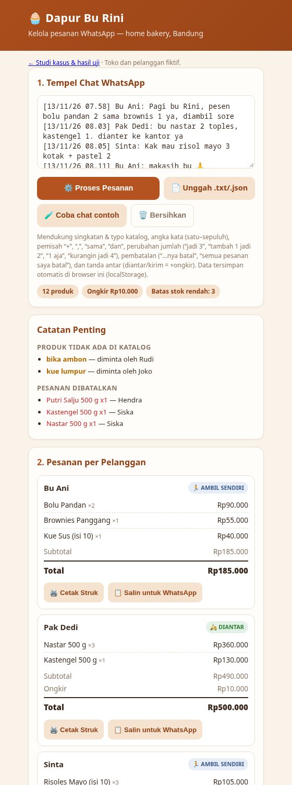
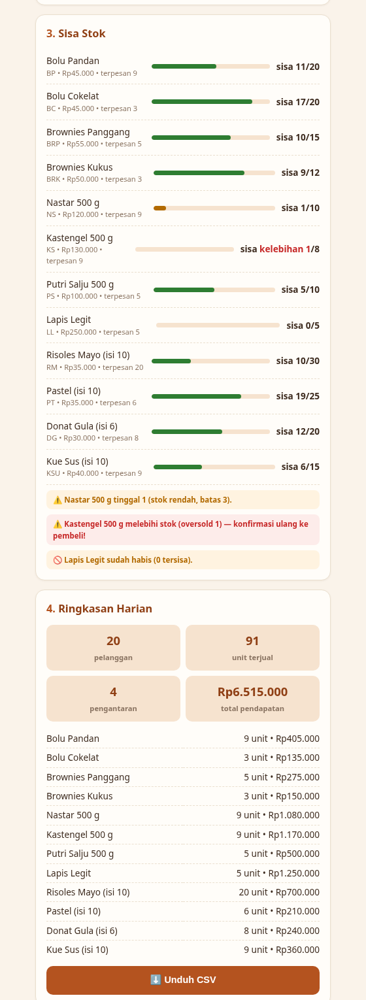
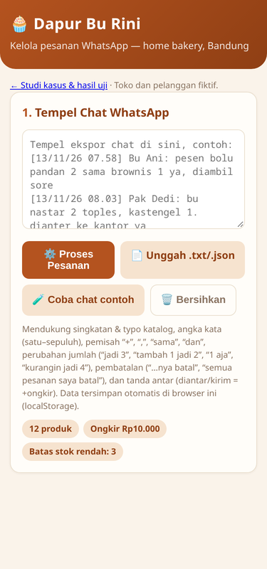

#BuiltWithAutoClaw · SMB
WhatsApp orders in, stock & invoices out
A home bakery takes every order in chat and loses changes like “jadi 3 aja”. AutoClaw built the tool in one run. Then I tested it on chats it had never seen — and fixed what broke.
1 · Context
Problem. Small Indonesian food sellers take orders in WhatsApp. Orders change mid-day (“jadi 3 aja”, “ga jadi”), get copied by hand into a notebook, and the owner finds out too late that kastengel is sold out or that a customer was overcharged.
Where it is used. At the end of the order window: paste the chat export, get the order list, the stock left, a WhatsApp-ready invoice per customer and a CSV for the books. No server, no account, works offline.
Store and customers are fictional (“Dapur Bu Rini”, Bandung). No real customer data.
2 · Process
- Brief — catalog (12 products, prices, stock, aliases) + one day of chat (40 messages) + the requirements (full prompt in section 5).
- AutoClaw built — a single-file tool (no CDN), a pure
parseChats()function, 36 unit checks and a README, in about 7 minutes. - I tested — wrote two more chat days it never saw (30 + 25 messages, new customers, new phrasing), labelled every message by hand and scored the tool in a headless browser.
- I fixed — the second AutoClaw round was blocked by the model quota, so I patched the parser myself; every change is marked in the code and published as a diff.

3 · Result: tested on chats it never saw
On the 40 chats it was built on, v1 was perfect. On new chats it was not: 6/10 orders right and a 30% overcharge. That is the number a shop owner would have paid for.
| Version | Chats | Orders exact | Day total | Wrong extra lines |
|---|---|---|---|---|
| AutoClaw v1 | 40 chats it was built on | 20/20 | Rp 6,515,000 → exact | 0 |
| AutoClaw v1 | 30 new chats (holdout 1) | 9/13 | Rp 3,275,000 → +6.9% | 8 |
| AutoClaw v1 | 25 new chats (holdout 2) | 6/10 | Rp 1,825,000 → +29.9% | 8 |
| Fix round 1 | holdout 2 — blind | 7/10 | Rp 1,825,000 → -1.6% | 4 |
| Fix round 2 | all three sets | 43/43 | Rp 11,615,000 → exact | 0 |
Honest reading: the “blind” row is the real measure (7/10, total −1.6%). The last row is no longer blind, because I fixed against those chats. AutoClaw’s own 36 checks still pass.


4 · What broke, and what I changed
| Customers wrote | v1 did | Fix |
|---|---|---|
| “pastelnya ga jadi”, “cancel semua”, “ga usah” | ignored | wider cancel vocabulary |
| “bolu pandannya ga jadi, nastar aja” | cancelled the wrong items | items after the cancel phrase are kept |
| “kastengelnya 3 deh” | added 3 → 5 | “-nya” on an ordered item = set, not add |
| “pastelnya kurangi 1” | set to 1 | relative subtract |
| “Bolu Pandan x2”, “3x risol” | read as 1 | 2x / x2 quantities |
| “saya ambil 2 brownies + 1 bolu” | numbers shifted | numbers-before-items mode |
| “tolong anterin” | no delivery fee | more delivery words |
| “ganti bolu pandan jadi bolu cokelat” | kept both | swap keeps the quantity |
Not handled yet: “yang tadi 2 lagi” without a product name, voice notes, “setengah lusin”, prices negotiated in chat.
5 · Reuse it
Swap the catalog for your shop. To check any order parser, use the same test kit: chats, hand-written answer keys and the scorer.
ScorerTest chatsAnswer keyCatalog
Build a small web tool for "Dapur Bu Rini", a home bakery in Bandung that takes every order through WhatsApp. Today the owner copies orders from chat into a notebook by hand, loses changes ("jadi 3 aja"), and finds out too late that an item is sold out.
Attached: catalog.json (12 products with code, price, opening stock and aliases; delivery fee; low-stock threshold) and chats.txt (one day of WhatsApp chat export, Indonesian, 40 messages).
Use the website-builder skill. Requirements:
1. Single file index.html: inline CSS and JS, no CDN or external library, works offline, Indonesian UI, mobile-first (375 px), saves state in localStorage.
2. Paste or upload a WhatsApp export -> orders per customer. It must understand Indonesian shorthand and typos via the aliases, number words (satu..sepuluh), separators like "+", ",", "sama", "dan"; later messages that change a quantity ("jadi 3", "tambah 1 jadi 2", "1 aja", "kurangin jadi 4"), cancel one item ("...nya batal"), cancel everything ("semua pesanan saya batal"); ignore messages that are not orders (thanks, payment notices, questions); list products customers asked for that are not in the catalog; requests to deliver ("antar", "anter", "kirim", "diantar") add the delivery fee.
3. Stock panel: remaining stock per product after all orders, with low-stock and oversold warnings.
4. Per-customer invoice: printable, plus a "Salin untuk WhatsApp" text.
5. Daily summary: units per product, revenue, number of customers; export CSV.
6. For automated testing, expose a pure function window.parseChats(chatText, catalog) (no DOM) that returns {orders: [{customer, items: [{code, qty}], delivery}], unknown: [...], cancelled: [...]} after applying all changes and cancellations in time order.
Save everything in a new folder autoclaw-r3-smb-app in the project: index.html, README.md (how it works and its limits), and test-output.txt with the parsed result of chats.txt. When you finish, list what you built and any message you could not parse.Lesson: ask the builder for a pure, testable function, and keep a day of chats it never sees. A tool that scores 100% on its own examples can still overcharge real customers.